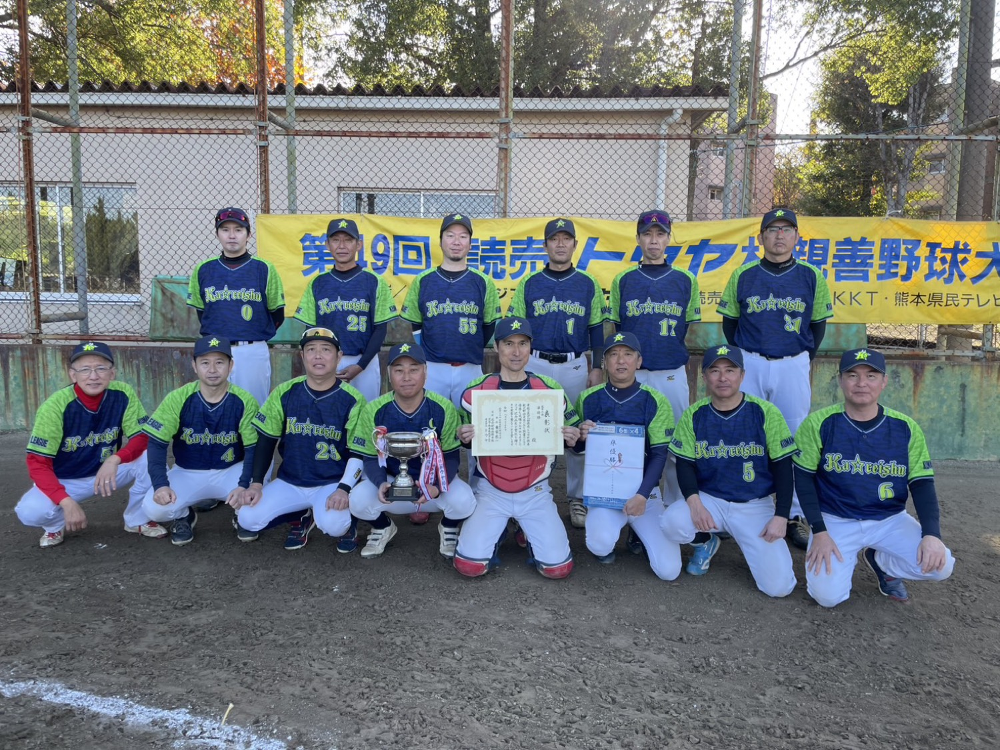
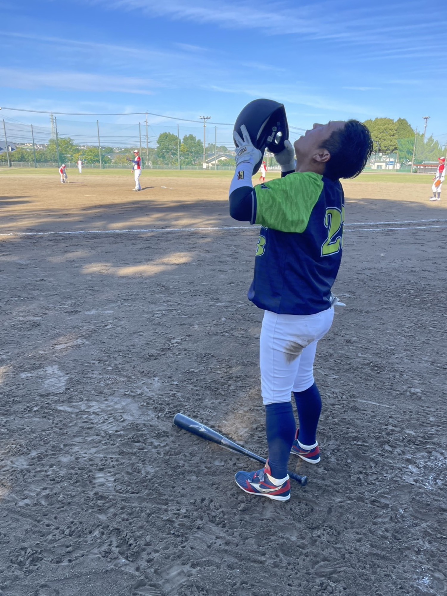
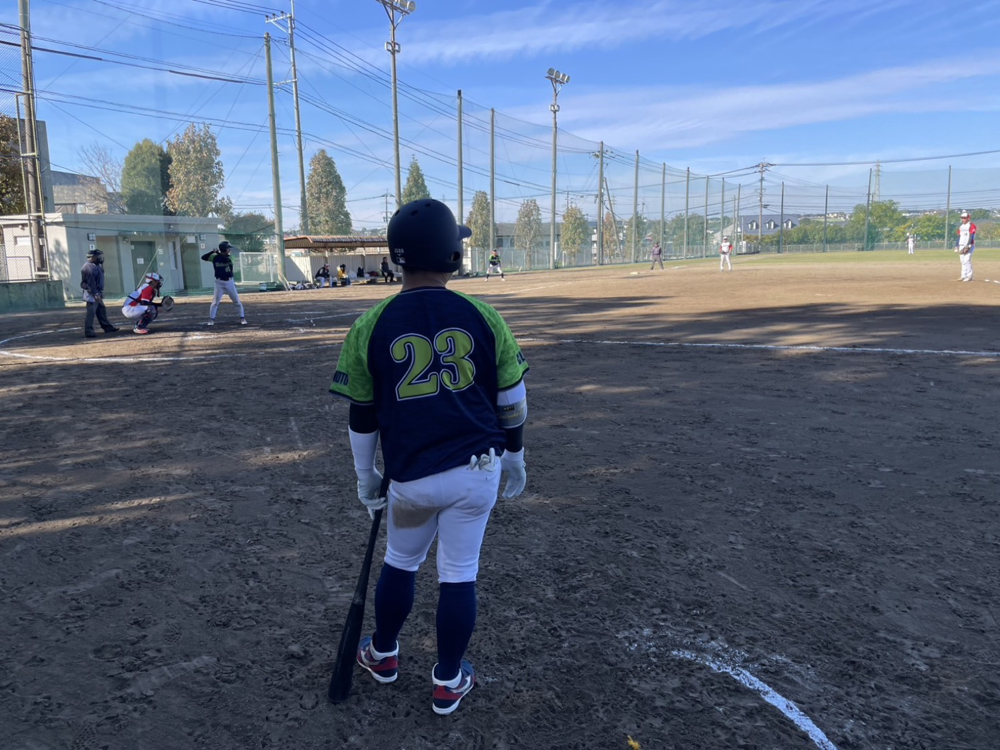
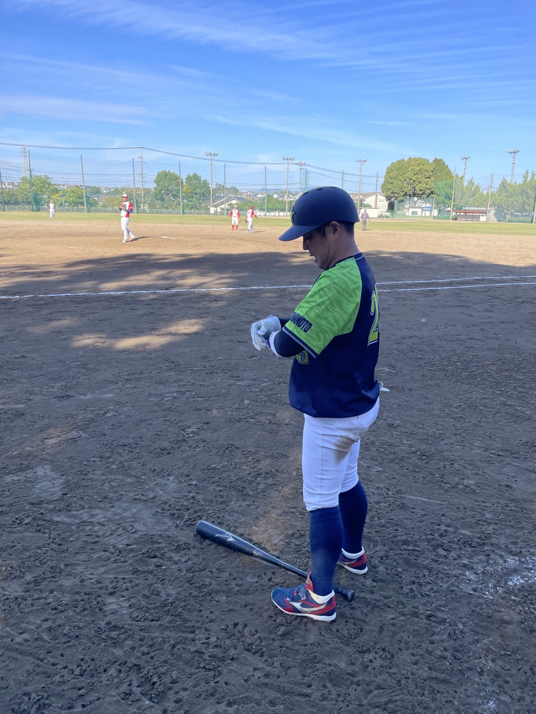

華麗衆とは
TCリーグ各チームの40歳以上メンバーが集い、経験と技術を活かしたプレーを楽しむサブグループです。
ベテランならではの読み合いと、若いチームとはまた違う味わい深い試合を展開しています。
年齢を重ねても野球を楽しみたいという思いを持つ選手たちが、それぞれの経験を持ち寄り、楽しく競い合っています。
40歳以上のメンバーが集うベテランチーム

TCリーグ各チームの40歳以上メンバーが集い、経験と技術を活かしたプレーを楽しむサブグループです。
ベテランならではの読み合いと、若いチームとはまた違う味わい深い試合を展開しています。
年齢を重ねても野球を楽しみたいという思いを持つ選手たちが、それぞれの経験を持ち寄り、楽しく競い合っています。



華麗衆はTCリーグの各チームから集まったメンバーで構成されています。
普段は各チームでプレーしている選手たちが、華麗衆として集結し、特別な試合を行います。
技術と経験を活かした戦略的な野球を楽しみながら、世代を超えた交流の場としても機能しています。